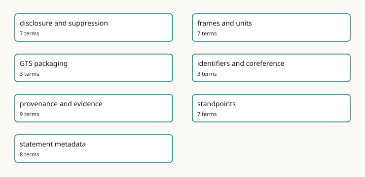

Cross-Cutting Concerns
These pages are generated from gmeow:docsConcern annotations in the ontology.

- disclosure and suppression - Projection-time withholding, coarsening, sensitivity, and display control.
- frames and units - Reference frames, units, determinacy, granularity, and frame-relative values.
- GTS packaging - The single-file Graph Transport Substrate and bundled documentation distribution.
- identifiers and coreference - External authority links, identifier records, and reference-only bridging.
- provenance and evidence - Attribution, derivation, confidence, evidence, and source lineage.
- standpoints - Perspective-indexed claims without primary, preferred, or winner slots.
- statement metadata - Native RDF 1.2 reifiers, statement annotations, confidence, provenance, and temporal scope.